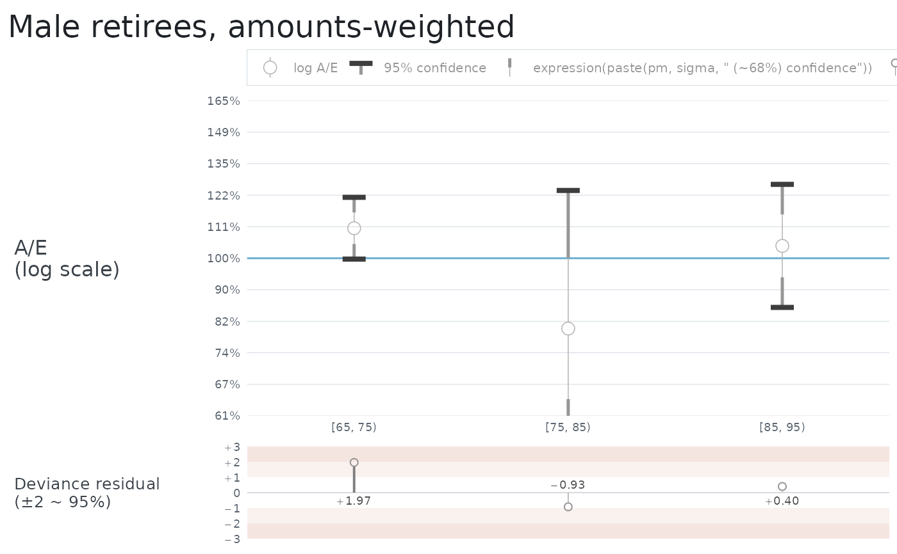
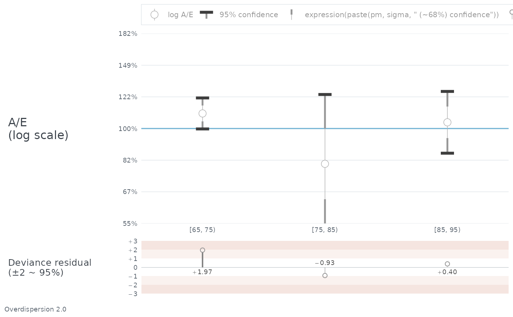

Draws A/E for each record of an aev on a log scale, with its confidence
interval, as a ggplot2 object that can be extended with + like any
other.
plot() is the same chart, drawn immediately.
Arguments
- object, x
An
aev.- ...
Passed from
plot()toautoplot(). Anything else is an error rather than being quietly dropped, so thatplot(aev, main = "...")says what it should have been.- title
A title for the chart, or
NULLfor none.- subtitle
A subtitle, printed under the title, or
NULLfor none.- notes
Lines of text to print under the chart, as a character vector, or
NULLfor none. See Notes.- residuals
Whether to draw the deviance residual panel below the A/E chart.
- log_range, log_step
The A/E axis, in \(\log(A/E)\): the range it covers and the spacing of its labelled ticks. See The A/E axis.
Value
autoplot() returns a ggplot. plot() draws it and returns x
invisibly.
The marker
Each record is an open circle at A/E, with the interval drawn around it in three weights: a thin line out to one standard deviation, a thicker line from there to 1.96 standard deviations, and a bar across the end.
The interval is \(\sqrt{V} / E\), symmetric in \(\log(A/E)\) and so asymmetric in A/E itself. It says how precisely the record was measured. It is not the significance test: read that off the deviance residual, which is printed by aev_properties and drawn in the panel below. Reading whether an interval crosses the 100% line is quick and nearly right; the residual is exact.
The residual panel
Unless residuals is FALSE, the deviance residual for each record is drawn
below the chart against the same x axis. This is the test the marker only
approximates. Its axis is fixed at \(\pm 3.5\) whatever the data does, so
one chart can be read against another, and the tint bands mark 1 to 2 and 2
to 3.
The drop line thickens and darkens as the residual grows, at breakpoints of 0.5, 1.5 and 2.5, so that a bad cell is visible before any number is read. Above 2.5 nothing further happens: a residual of 6 is drawn exactly like a residual of 3. That is deliberate. Line weight and lightness carry only a few steps a reader can tell apart, and they are better spent on the range where the reading turns from unremarkable to worth investigating than on a tail where the response is the same either way, where the normal approximation is at its worst, and where every value scales as \(1 / \sqrt{\Omega}\) in an overdispersion the caller chose.
So do not rank records by how heavy their lines look. The residual is printed by every marker to two places, and that is what separates them.
The printed value sits across the zero line from its own marker, so it is never clipped. A residual beyond \(\pm 3.5\) has its circle cut off at the edge of the panel, with its drop line running to the boundary, and its number is still there to be read.
Records with nowhere to go
A record is drawn only if it has a position. Four cases do not:
A, E and V all zero, which is a true statement about nobody.
Any of A, E or V missing.
A of zero with exposure, where \(\log(A/E)\) is infinite.
A/E give or take one standard deviation lying wholly off the axis, which by default runs from 61% to 165%.
Each keeps its place on the x axis and its label, so no category disappears.
The last two are real answers with nowhere to put them, and they are marked with an orange chevron against the top or bottom of the panel saying which way the record went. A record with no deaths gets one at the bottom, since \(\log(A/E)\) of \(-\infty\) is below any axis. The first two are not marked: a chevron says which way a record went, and neither "nobody" nor "not known" went anywhere.
The test is on the inner interval, not the 95% one. A record whose marker
and inner interval are both off the axis is replaced by a chevron even where
its outer arms would have reached back into the panel, because a bar with no
marker and no cap says less than the chevron does. A record whose inner
interval does reach the panel is drawn as it stands, with whatever runs past
the edge clipped. Widening log_range therefore removes chevrons, and
narrowing it adds them.
The names below the chart
Record names sit between the two panels, and group names below them inside a bracket: a vertical rule at each end of the group's span and a horizontal rule across the middle, broken either side of the name. Where the name is too wide to leave any horizontal, the two verticals carry the grouping alone.
Record names are wrapped onto more than one line when they will not fit the
width of a record. Nothing needs to be passed for this and there is nothing
to tune. How many lines to allow is decided from the names and the number of
records, against a chart the size ggsave() draws by default; where the
breaks fall is decided when the chart is drawn, from the width of the words
in the font they end up in. A chart drawn much narrower than that will pack
its names tighter than they want to go, which is what every chart did before.
Title, subtitle and notes
Three pieces of text can be set on a chart, and they sit where a reader
expects them: the title above it, the subtitle under the title, and
notes beneath everything. All three are left-aligned with the plot.
notes is a character vector and nothing more: each element is printed on
its own line beneath the chart, in the order given. Notes are set smaller
than anything else on the chart and their lines further apart, so that a list
of them reads as separate statements rather than as a paragraph.
No heading is added. A note is whatever the caller says it is, so a caller who wants one writes it as the first note.
autoplot(aev, notes = c(
"Overdispersion 2.0",
"Z = 1.31 against S4PMA",
"Experience to 31 December 2025"
))Deliberately, it knows nothing about what a note says. An aev is three
vectors of numbers and anybody may build one, so the chart is not coupled to
how those numbers were produced – and its notes are not either. Whatever a
caller wants recorded against the chart, they write and pass.
The notes are the plot's caption, so + ggplot2::labs(caption = ...) added
afterwards replaces them, as it would any caption.
The A/E axis
log_range and log_step are in \(\log(A/E)\), because that is the space
the axis is even in: the default range of \(\pm 0.5\) in steps of
\(0.1\) comes out as 61, 67, 74, 82, 90, 100, 111, 122, 135, 149 and 165
per cent.
log_step must divide both ends of log_range. The axis has no expansion,
so its ends are its outermost grid lines and a step that fell short would
leave the panel open at the top; dividing both ends also guarantees a break
on 100%, which is the line every marker is read against. A step of 0.2 does
not divide the default range, so twenty per cent steps want a range of
\(\pm 0.6\). The error says so when it happens.
log_range must stay within \(\pm 1\), an A/E of 37% to 272%. The two
panels share one scale and are told apart by how far each reaches, so an A/E
axis cannot be allowed to grow into the residual panel's territory.
These arguments exist because the usual way round is a trap: adding
+ ggplot2::scale_y_continuous(...) replaces the whole scale, and with it
the per-panel limits that keep the residual axis at \(\pm 3.5\). That
produces a wrong chart rather than an error.
Its size
Everything drawn on the chart is sized against its type rather than against
the device: the marker and its interval, the chevrons, the residual markers,
the depth of the residual strip, the group brackets and the legend key are
all multiples of the base text size. So the way to draw this chart larger is
to ask for larger type as well as a larger device, which is what
theme_aev() is for:
A larger device on its own gives the same marker in more room, which reads thinner and smaller the further it is stretched; raising the type with it keeps the chart in the proportions it was drawn in. There is no separate argument for this, deliberately – a second knob could be left out of step with the theme, and this one cannot.
The A/E panel takes whatever height is left once the title, legend, x axis,
group names and residual strip have taken theirs, so it is the part that
absorbs the slack. It wants room: the prototype runs at about four times the
depth of the residual strip, which a default ggsave() comfortably gives.
One theme setting is a trap, in the same way a replaced scale is. Adding
+ ggplot2::theme(panel.heights = ...) overrides both panels' heights after
the chart has set them, so the residual strip stops being the fixed depth it
is meant to be and stops following the type. Nothing warns: the setting is
applied later than anything this chart can see. Resize with
theme_aev() instead.
Examples
aev <- create_aev(
A = c(1100, 40, 260),
E = c(1000, 50, 250),
V = c(2500, 125, 620)
)
names(aev) <- c("[65, 75)", "[75, 85)", "[85, 95)")
autoplot(aev, title = "Male retirees, amounts-weighted")

# A wider axis in coarser steps, and the assumption the chart was drawn on.
autoplot(aev, log_range = c(-0.6, 0.6), log_step = 0.2) +
ggplot2::labs(caption = "Overdispersion 2.0")
